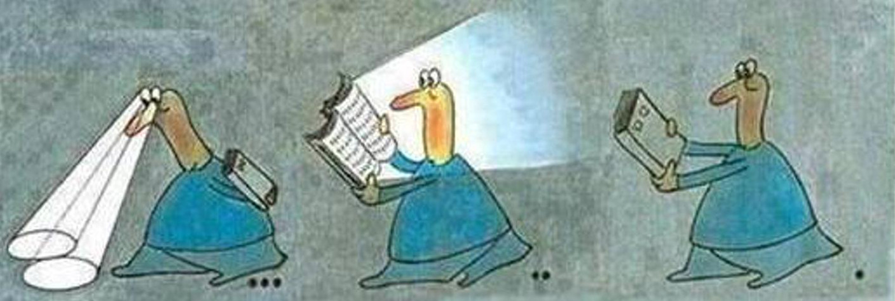

Payam Karisani
Email: p.karisani (at) gmail (dot) comI am a graduate student at Emory University. My research is in Natural Language Processing and Machine Learning, I work on topics such as Semi-Supervised Learning and Active Learning.
Before coming here, I was an Information Retrieval researcher at Tehran University (where I got my M.Sc. degree from), and before that I was a student at IUST. My supervisor is Li Xiong.
(This is not a full list)
4. Contextual Multi-View Active Learning for Query-Based Classification Tasks in Social Media
Status: Accepted to NAACL 2021 but was not published there (review scores: 4.5, 4.5, 4 out of 5). Due to logistical reasons it was submitted to another conference.
Authors: P. K., N. K., L. X.
3. Semi-Supervised Text Classification via Self-Pretraining
Venue: WSDM 2021 (full paper at the main research track, acceptance rate: 18.6%) [Oral]
Authors: P. K., N. K.
Link | Code
2. Domain-Guided Task Decomposition with Self-Training for Detecting Personal Events in Social Media
Venue: WWW 2020 (full paper at the main research track, acceptance rate: 19.2%) [Oral]
Authors: P. K., J. H., E. A.
Link
1. Did You Really Just Have a Heart Attack? Towards Robust Detection of Personal Health Mentions in Social Media
Venue: WWW 2018 (full paper at the main research track, acceptance rate: 15.0%. Best Paper Runner-Up.) [Oral]
Authors: P. K., E. A.
Link | Code | Data
I have been a reviewer or pc member of NIPS, ICML, ICLR, AAAI, ACL, and EMNLP.

